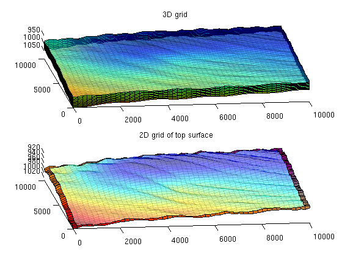
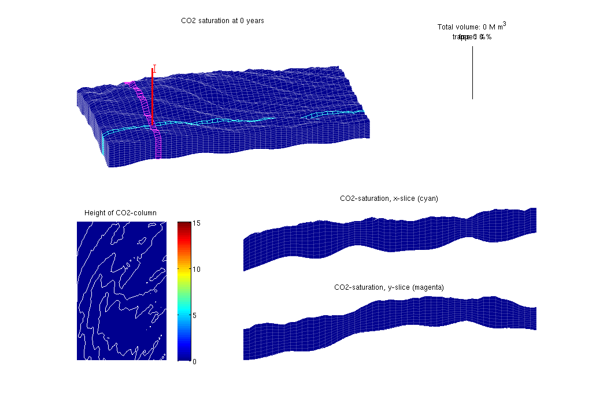
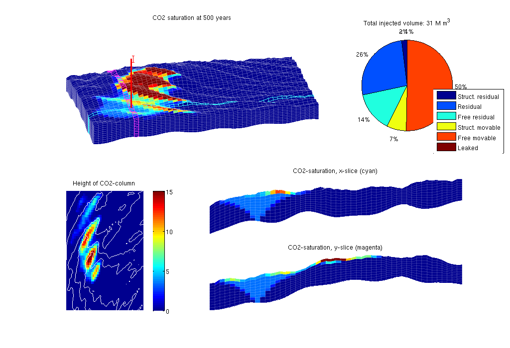

Vertical-Averaged Simulation: Sloping Aquifer
In this example we consider a synthetic sloping aquifer. The topography of the top surface and the geological layers in the model is generated by combining the membrane function (MATLAB logo) and a sinusoidal surface with random perturbations.
Here, CO2 is injected in the aquifer for a period of 30 years. Thereafter we simulate the migration of the CO2 in a post-injection period of 720 years.
The simulation is done using the vertical average/equilibrium framework.
Contents
Write header
clear, clc; disp('================================================================'); disp(' Vertical averaging applied to a synthetic sloping aquifer'); disp(' using C++ accelleration in the transport solver'); disp('================================================================'); disp(' ');
================================================================ Vertical averaging applied to a synthetic sloping aquifer using C++ accelleration in the transport solver ================================================================
Construct stratigraphic and petrophysical model
We construct a slightly sloping aquifer with a wavy top surface that allows for structural trapping
[G, Gt, rock, rock2D, bcIxVE] = makeSlopingAquifer();
-> Reading SlopingAquifer.mat -> Reading failed, constructing grid models -> Writing SlopingAquifer.mat
Set time and fluid parameters
Inject CO2 for 30 years and study subsequent migration until 750 years after injection started. The fluid data are chosen so that they are resonable at p = 300 bar
gravity on T = 500*year(); stopInject = 30*year(); dT = 2*year(); dTplot = 2*dT; fluidVE = initVEFluidHForm(Gt, 'mu' , [0.056641 0.30860] .* centi*poise, ... 'rho', [686.54 975.86] .* kilogram/meter^3, ... 'sr', 0.2, 'sw', 0.1, 'kwm', [0.2142 0.85]);
Set well and boundary conditions
We use one well placed down the flank of the model, perforated in the bottom layer. Injection rate is 1.4e3 m^3/day of supercritical CO2. Hydrostatic boundary conditions are specified on all outer boundaries.
% Set well in 3D model wellIx = [G.cartDims(1:2)/5, G.cartDims([3 3])]; rate = 2.8e3*meter^3/day; W = verticalWell([], G, rock, wellIx(1), wellIx(2), ... wellIx(3):wellIx(4), 'Type', 'rate', 'Val', rate, ... 'Radius', 0.1, 'comp_i', [1,0], 'name', 'I'); % Well and BC in 2D model WVE = convertwellsVE(W, G, Gt, rock2D); bcVE = addBC([], bcIxVE, 'pressure', ... Gt.faces.z(bcIxVE)*fluidVE.rho(2)*norm(gravity)); bcVE = rmfield(bcVE,'sat'); bcVE.h = zeros(size(bcVE.face));
Prepare simulations
Compute inner products and instantiate solution structure
SVE = computeMimeticIPVE(Gt, rock2D, 'Innerproduct','ip_simple'); preComp = initTransportVE(Gt, rock2D); sol = initResSolVE(Gt, 0, 0); sol.wellSol = initWellSol(W, 300*barsa()); sol.s = height2Sat(sol, Gt, fluidVE); % Use C++ acceleration for the transport calculation % NB: requires that the VEmex module has been compiled try mtransportVE(); cpp_accel = true; catch me d = fileparts(mfilename('fullpath')); disp('mex-file for C++ acceleration not found'); disp(['See ', fullfile(VEROOTDIR,'VEmex','README'), ' for building instructions']); disp('Using matlab ve-transport'); cpp_accel = false; end % Find trapping structure in grid. Used for calculation of trapped volumes ts=findTrappingStructure(Gt);
Trap level 1: 91 traps identified Trap level 2: 13 traps identified Trap level 3: 3 traps identified
Prepare plotting
We will make a composite plot that consists of several parts, a 3D plot of the plume, a pie chart of trapped versus free volume, a plane view of the plume from above, and two cross-sections in the x/y directions through the well
opts = {'slice', wellIx, 'maxH', 15, 'Saxis', [0 1-fluidVE.sw], ...
'view', [-7, 25], 'Wadd', 100};
plotPanelVE(G, Gt, W, sol, 0.0, [0 0 1], opts{:});
 Main loop
Run the simulation using a sequential splitting with pressure and transport computed in separate steps. The transport solver is formulated with the height of the CO2 plume as the primary unknown and the relative height (or saturation) must therefore be reconstructed.
t = 0; totVol = 0; fprintf(1,'\nSimulating %d years of injection',convertTo(stopInject,year)); fprintf(1,' and %d years of migration\n', convertTo(T-stopInject,year)); fprintf(1,'Time: %4d years', convertTo(t,year)); sol_mex = sol; while t<T % Advance solution: compute pressure and then transport sol = solveIncompFlowVE( sol, Gt, SVE, rock, fluidVE, ... 'bc', bcVE, 'wells', WVE); if cpp_accel [sol.h, sol.h_max] = mtransportVE(sol, Gt, dT, rock, ... fluidVE, 'bc', bcVE, 'wells', WVE, ... 'gravity', norm(gravity), 'verbose', false); else sol = explicitTransportVE(sol, Gt, dT, rock, fluidVE, ... 'bc', bcVE, 'wells', WVE, 'preComp', preComp); end % Reconstruct 'saturation' defined as s=h/H, where h is the height of % the CO2 plume and H is the total height of the formation sol.s = height2Sat(sol, Gt, fluidVE); assert( max(sol.s(:,1))<1+eps && min(sol.s(:,1))>-eps ); t = t + dT; % Compute total injected, trapped and free volumes of CO2 if ~isempty(WVE) totVol = totVol + WVE.val*dT; end vol = volumesVE(Gt, sol, rock2D, fluidVE, ts); % Check if we are to stop injecting if t>= stopInject WVE = []; dT = 10*year(); dTplot = dT; end % Plotting fprintf(1,'\b\b\b\b\b\b\b\b\b\b%4d years', convertTo(t,year)); if mod(t,dTplot)~= 0 && (t<T), continue else plotPanelVE(G, Gt, W, sol, t, [vol totVol], opts{:}); drawnow end end fprintf(1,'\n\n'); % delete C++ simulator if cpp_accel, mtransportVE(); end
Simulating 30 years of injection and 470 years of migration Time: 500 years